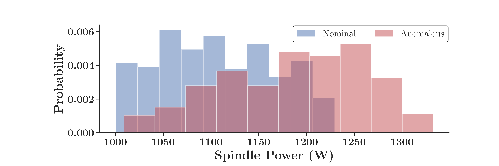
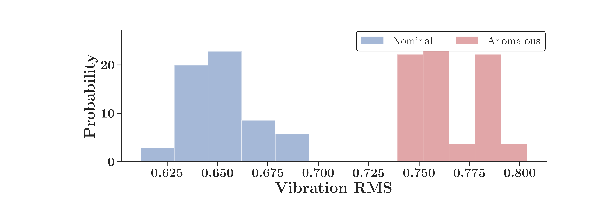
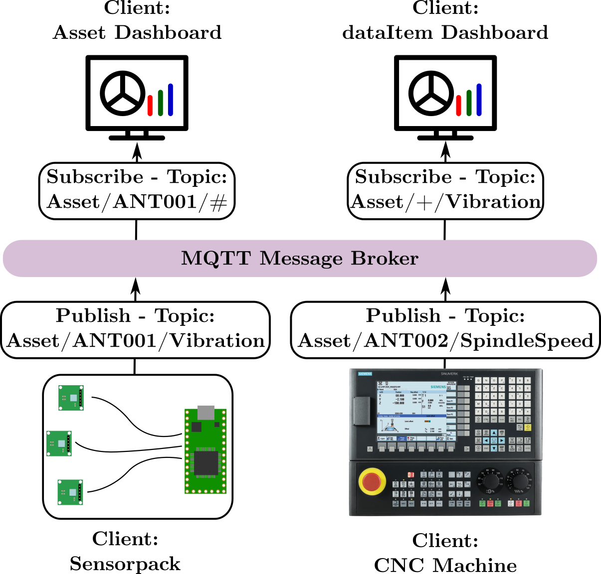
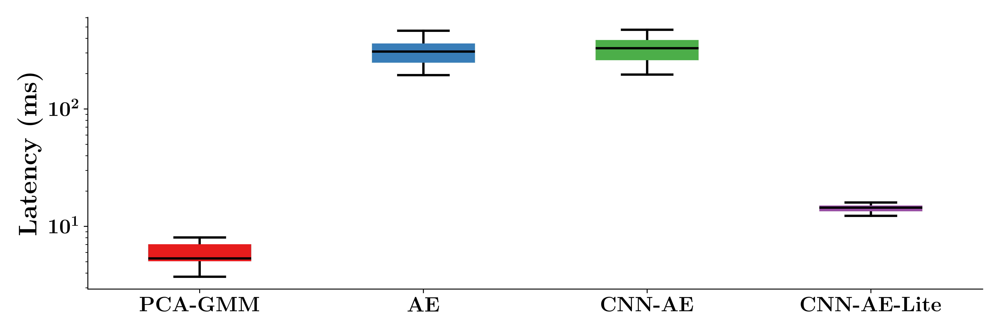

Bayesian Edge Analytics of Manufacturing Process and Health Status in an IoT Framework
July 7th 2020
Daniel NewmanDepartment of Mechanical Engineering
Georia Institute of Technology
danielnewman@gatech.edu
www.danielmnewman.com
The Past Decade
Introduction
Thesis Contributions
Introduction
Thesis Contributions
It is comparatively "easy" to train machine learning models for health monitoring, provided high-quality, labeled data
This thesis proposes a strategy for high-quality data acquisition and feature extraction in an IoT framework. In addition, machine learning models compatible with near real-time edge inference are presented.
Introduction
Sensor/Controller Integration
Introduction
Sensor/Controller Integration
- Facilitates sample triggering and sensor contextualization
- Enables automatic labeling for health monitoring
Introduction
Consistent ML Framework
Introduction
Consistent ML Framework
- Perform training remotely
- Deploy trained models to the edge for inference
- "Close the loop"
Introduction
Integrated Edge Device
Introduction
Integrated Edge Device
- Embedded Linux computer capable of sensor and controller data acquisition
- Using open source software, perform near real-time data analytics
Introduction
Demonstration
This slide will show a video demonstrating the tool wear experiment on the Emco
Outline
- Background
- Industrial Internet of Things
- Data Acquisition Strategies
- Open Source Tools
- Machine Health Monitoring
- Proposed IoT framework
- OPC-UA
- Frequency-Domain Signal Processsing
- Discrete Fourier Transform
- Improving DFT results
Industrial Internet of Things
Background
Industrial Internet of Things

Background
CNC Controller Protocols
- Modern CNC machines utilize communications protocols to share operational information
- Two protocols considered:
- MTConnect
- OPC-UA
- With the Internet of Things, machine data availability has greatly increased
- This thesis will propose a strategy for machine data utilization
Background
Sensor Data Acquisition
- IoT-compatible sensor data acquisition is an unsolved issue
- Two types of equipment are typically available:
- High-voltage, high-precision, proprietary DAQ
- Low-voltage, open-source DAQ
Background
Health Monitoring
- Condition-based and predictive maintenance are widely understood methods of reducing downtime and maintenance costs
- The objective of sensor data acquisition is to retrieve actionable information on machine health status
- Feature extraction and model inference are excellent methods by which this may be done
Background
Health Monitoring

Background
Vibration Features
Background
Digital Architecture for Health Monitoring
Architecture
Controller vs Sensor Data
- This framework relies on two data sources:
- CNC controllers
- Sensors
- CNC machines can provide large quantities of highly detailed data
- G-Code program name
- Spindle speed
- Axis loads
- Machine coordinates
Why use external sensors?
Architecture
Controller vs Sensor Test
- Compare process data from worn and unworn tools
- Use spindle power from CNC controller
- Compare with accelerometer measurements
- Given the advanced wear, data should show obvious distinction between tools
Architecture
Controller vs Sensor Results
 Architecture
Frequency-Domain Results


Architecture
Architecture
Frequency-Domain Results
Clearly, an accelerometer provides more features than the controller. More control over sampling ensures better distinction in health metrics as well.
For these reasons, the controller data are considered useful for contextual information such as Program Name, Spindle Speed, Tool Number, etc. Sensor data are used to extract health metrics within this context.
Architecture
Clearly, an accelerometer provides more features than the controller. More control over sampling ensures better distinction in health metrics as well.
For these reasons, the controller data are considered useful for contextual information such as Program Name, Spindle Speed, Tool Number, etc. Sensor data are used to extract health metrics within this context.
Architecture
MQTT-Based Framework

Architecture
Architecture
JSON Message Definitions
| Field | Description |
|---|---|
| AssetId | An identifier for the machine or device |
| dataItemId | An identifier for the type of data |
| dateTime | The time at which the value was taken |
| value | The numerical or string value of the data being sent |
| itemInstanceId | An optional identifier for the item being processed |
Architecture
Digital Architecture for Health Monitoring
topic: "Asset/A1000/rotaryVelocity_S"
payload: {
"dateTime": "2019-03-08T15:43:44.808Z",
"assetId" : "A1000",
"dataItemId" : "rotaryVelocity_S",
"value" : 1002
}
Introduction
Digital Architecture for Health Monitoring
topic: "Asset/A1000/Vibration"
payload: {
"dateTime": "2019-03-08T15:43:44.808Z",
"assetId" : "A1000",
"dataItemId" : "Vibration",
"iteminstanceId" : "Part_1001",
"sensorId": "accelerometer1",
"samplingInterval":0.00048828125,
"Kurtosis": 0.033,
"mean": -0.040,
"rootMeanSquare": 0.025,
"skewness": -0.204,
"variance": 0.001,
"PSDFreqInterval":10,
"PSDAmps":[0.895,0.889,...,0.877]
}
Architecture
Edge-Deployable ML Tools
Edge-Deployable Tools
Edge-Deployable Tools
- Overview of Available Tools
- Anomaly Detection
- Gaussian Mixture Modeling
- MLP Autoencoders
- Convolutional Autoencoders
- Classification
- Naive Bayes
- Neural Network Classifiers
- Edge and IoT Deployment
- Anomaly Detection
- Classification
Test Dataset Parameters

Test Dataset


IoT-Deployable Tools
- Anomaly Detection
- Gaussian Mixture Modeling (PCA-GMM)
- MLP Autoencoders (MLP-AE)
- Convolutional Autoencoders (CNN-AE)
- Lite Convolutional Autoencoder (CNN-AE-Lite)
- Classification
- Naive Bayes (PCA-GNB)
- MLP Classifier (MLP)
- MLP Classifier With Convolutional Layers (CNN-MLP)
- Lite MLP Classifier With Convolutional Layers (CNN-MLP-Lite)
Deployment Locations
- Personal Desktop Computer
- Amazon EC2 Instance
- Pocketbeagle
- Beaglebone Black
Desktop Latency Comparison


Edge-Deployable Tools
Edge-Deployable Tools
Full vs. Lite Neural Net


PCA-GMM Latency

CNN-AE-Lite Latency

Gaussian Mixture Model


Gaussian Mixture Model


Autoencoder


Autoencoder

Conv. Autoencoder


Conv. Autoencoder

Integrated Edge Device
- Using a Beaglebone device, what's a reasonable performance expectation for vibration data acquisition, feature extraction, and model inference
- Experimental Setup:
- Use C script for PRU measurements
- Store measurements in a serial file
- Use Python API for feature extraction, followed by model inference
- Evaluate computation time required for increasing sample sizes
- Hold sampling duration constant (higher sample size = higher sample rate)
Notes
- Al Salour hasn't responded to schedule proposal
- MMM access for experiments
- I've set up everything I believe I can to be prepared. I have toolpaths ready
- I reached out to my Boeing manager and I am in good shape (target start date 8/28).
- Full draft revision (chapters 1-5) on track for Friday
- Fully convert to Word or PDF okay?
- Spoke with Pierrick. Shared data acquisition philosophy. Sounds like Beaglebon AI can be used for his work.
Summary Modifications
Using modern machine learning tools and embedded computing, a low-cost, integrated data acquisition platform is proposed in this work. Built on modern, open-source hardware and software, this platform enables high-quality sensor data acquisition and edge-based computation to facilitate machine health monitoring in an IoT framework. By leveraging proposed protocols for edge-based feature extraction, large sensor samples are reduced in size to facilitate health monitoring and near real-time inference. This proposed methodology compares favorably to cloud-based solutions. A case study in tool wear analysis shows that CNC controller data may be used to contextualize accelerometer measurements, and in turn facilitate training novelty detection and classification algorithms. These algorithms are then deployed to the edge device for near-real time inference.
Edge Device Diagram